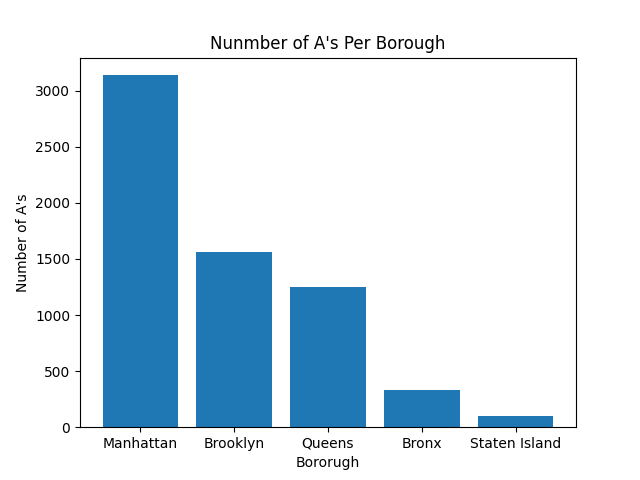

Name : Henry Cheung
EMPLID : 23853572
Title : restaScore - Health Rating
EMPLID : 23853572
Title : restaScore - Health Rating
Project Background
My project aims to use restaurant health inspection scores and map the locations on a map with the scores along with the problems/descriptions given that will show why they received that score. The problem at hand is that most food delivery and even Google Maps do not provide the health inspection score for the restaurants. I believe that this information should be available to the end user so that they can make an informed decision on where to order their food. Ordering and eating food that was prepared in an unsanitary environment can have negative effects on ones health.Relevance
New York City is a huge business center that people travel to for work. During a busy work day, some people may want to order food instead of wasting time and going out to eat. Knowing the restaurant health rating is important so that the user knows that their food was prepared in a clean environment and they will not get sick from eating this food.Overview
Hypothesis:I hypothesize that most of the restaurants in New York City have a rating of A and the borough with the most A's is Manhattan.
Data:
The data used was downloaded from data.cityofnewyork.us and catalog.data.gov. There were two CSV's that included the score of each restaurant and if the restaurant was COVID compliant.
Methods and Tools:
I used methods such as merging, datacleaning, and folium mapping. I needed to import numpy, pandas, folium, and Flask.
Data
Scale of Score to letter grade:This data was only used to get the range of each score to generate the missing letter grade.
Open Restaurant Applications:
Open Restaurant Applications is a dataset that provided information on whether restaurants were COVID compliant and had enough space for sidewalk and roadway seating. The column 'Food Service Establishment Permit #' was important as an unique identifier for each restaurant which was important for merging both datasets.
DOHMH New York City Restaurant Inspection Results:
DOHMH New York City Restaurant Inspections was the main dataset used in my project. The column 'CAMIS' was used as the unique identifier for each restaurant. The 'DBA', 'BORO', 'BUILDING', 'STREET', 'CUISINE DESCRIPTION', and 'ZIPCODE' column provided the information for plotting the restaurant on the map. The column 'VIOLATION DESCRIPTION' was used to check and display for the user which violations were cited during the inspection. 'CRITICAL SCORE' was used to check if the violations were critical or not, since some of the violations were not as severe as others. The most important columns of the dataset was 'SCORE' and 'GRADE' which was the restaurant Health Rating with missing data but was filled in using the numeric SCORE grade. Finally, 'LONGITUDE' and 'LATITIUDE' was used to plot the data on the map with popups including the restaurant's information.
Techniques
The data I used had a lot of missing data which I had to remove due needing that information to plot the points. Furthermore, I had to order the data to only get entries from 2017. For the missing grade, I generated a letter grade using the score values given and filled in the missing data in the 'GRADE' column with the generated scores. I also sorted the dataset using the date of inspection. There were multiple entries per restaurant and used drop_duplicates() to keep only the first entries which is the latest inspection score. I then merged both of my CSV files using the CAMIS number in both files and cleaned up the data further. I then used the merged CSV file and began to plot markers on a map of NYC using the Longitude and Latitude values.CDC.gov
"Anyone can get sick from eating contaminated food. Follow four simple food safety steps—clean, separate, cook, and chill—to lower your chance of food poisoning and to protect yourself and your loved ones." Foodborne GermsConclusion
From my map, I can conclude that most of the restaurant in New York City are have the health rating score of A. However, there are some restaurants that have a rating of A but also have a critical violation.Citation
Scale of Score to letter gradeOpen Restaurant Applications
DOHMH New York City Restaurant Inspection Results
Front Page Background

Graph Description
This bar graph shows that the borough that has the most restaurants with the health rating score 'A' is Manhattan, followed by Brooklyn. Manhattan has more than double the amount of A's as Brooklyn does. Out of the 8368 unique restaurants, 6382 of the restaurants have the health score 'A'. This shows that based on the given information, the majority of restaurants in New York City have a health rating of 'A'.
Scroll down for map
⌄
⌄